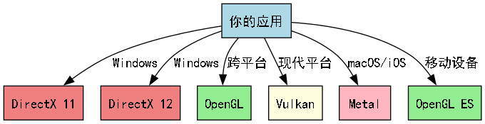
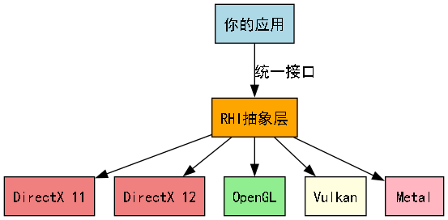

- 制作者
 1.14.0
1.14.0
|
FCT
|
本指南旨在帮助FCT库开发者理解着色器的基本概念、类型和工作原理。着色器是现代图形渲染管线的核心组件。
着色器（Shader）允许用户自定义一段程序在GPU上运行，用于控制图形渲染管线中特定阶段的处理逻辑。它们决定了顶点如何变换、像素如何着色、以及各种视觉效果如何实现。
FCT库说明：FCT库使用基于HLSL的着色器语言，这是微软开发的高级着色器语言，具有优秀的工具支持和性能表现。

功能：处理每个顶点的变换和属性计算
详情了解：
功能：处理图元（点、线、三角形），可以生成新的几何体
详情了解：
功能：计算每个像素的最终颜色
注意：像素着色器也被称为片段着色器（Fragment Shader），两个术语指的是同一个概念。在DirectX中通常称为像素着色器，在OpenGL中通常称为片段着色器。
详情了解：
功能：决定哪些网格着色器工作组需要执行
详情了解：
功能：生成图元和顶点数据
详情了解：
功能：执行通用并行计算任务
详情了解：
| 语言 | 平台支持 | 特点 | 适用场景 | FCT使用 |
|---|---|---|---|---|
| GLSL | OpenGL/Vulkan | 类C语法，跨平台 | 通用图形开发 | ❌ |
| HLSL | DirectX | 微软生态，工具完善 | Windows平台开发 | ✅ FCT基于此 |
| SPIR-V | Vulkan/OpenCL | 中间表示，高性能 | 现代图形API | ❌ |
| MSL | Metal | 苹果平台专用 | iOS/macOS开发 | ❌ |

着色器是现代图形编程的核心，理解不同类型着色器的功能和特点对于开发高质量的图形应用至关重要。在FCT库的开发中，我们需要：
通过掌握这些知识，你将能够更好地参与FCT库中着色器相关功能的开发和维护。